MaAI-Synth — synthesized spoken dialogues
Two-party spoken dialogues generated end-to-end: LLM scripts → TTS → turn-taking and backchannel timing by MaAI.
Stereo: left = ch0 system (Inoue) right = ch1 user (Mori) · thin bars = backchannels · click a line to jump there.
First meeting 初対面の雑談
config: configs/ft_v1.yaml
First meeting #01 · 2:06.8
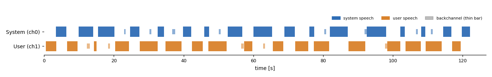
Transcript (with backchannels)
First meeting #02 · 2:28.3
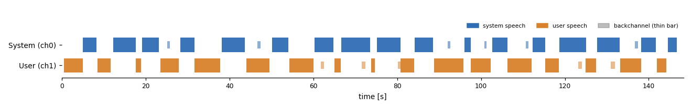
Transcript (with backchannels)
First meeting #03 · 2:10.8

Transcript (with backchannels)
First meeting #04 · 2:31.4
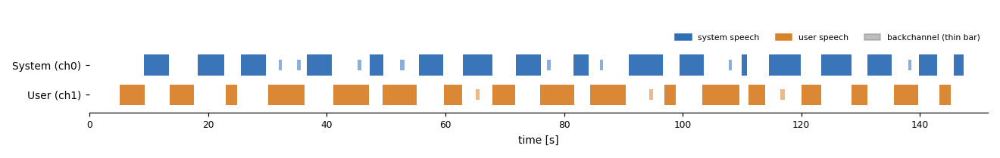
Transcript (with backchannels)
First meeting #05 · 2:33.2
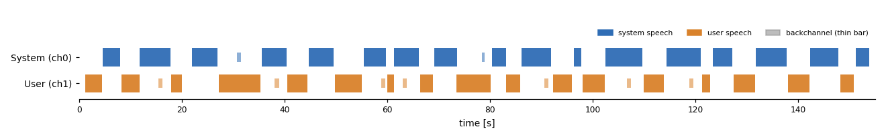
Transcript (with backchannels)
First meeting v2 (persona cards) 初対面の雑談 v2（ユーザ側の人物カードあり）
config: configs/ft_v2.yaml
First meeting v2 (persona cards) #01 · 2:05.8

Transcript (with backchannels)
First meeting v2 (persona cards) #02 · 1:42.4
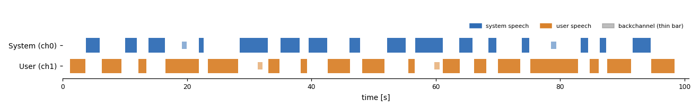
Transcript (with backchannels)
First meeting v2 (persona cards) #03 · 2:15.9
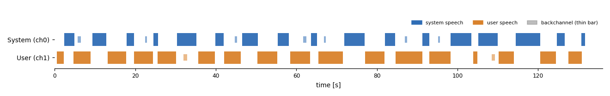
Transcript (with backchannels)
First meeting v2 (persona cards) #04 · 2:19.3

Transcript (with backchannels)
First meeting v2 (persona cards) #05 · 1:48.6

Transcript (with backchannels)
First meeting + long user silences 初対面の雑談＋ユーザ側の長い沈黙
config: configs/ft_sil_v1.yaml
First meeting + long user silences #01 · 2:31.9

Transcript (with backchannels)
First meeting + long user silences #02 · 2:39.3
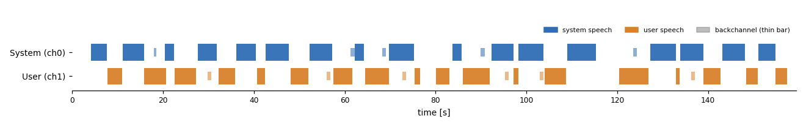
Transcript (with backchannels)
First meeting + long user silences #03 · 2:09.1
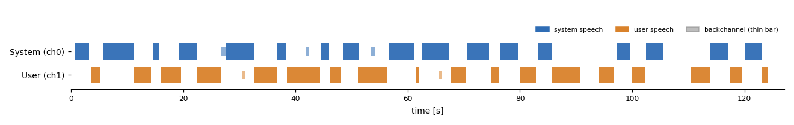
Transcript (with backchannels)
First meeting + long user silences #04 · 2:53.4

Transcript (with backchannels)
First meeting + long user silences #05 · 2:40.8
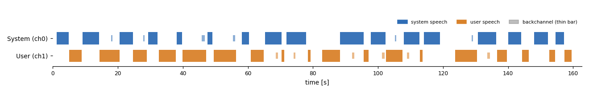
Transcript (with backchannels)
First meeting + long user silences v2 初対面の雑談＋ユーザ側の長い沈黙 v2
config: configs/ft_sil_v2.yaml
First meeting + long user silences v2 #01 · 2:07.7

Transcript (with backchannels)
First meeting + long user silences v2 #02 · 2:27.0

Transcript (with backchannels)
First meeting + long user silences v2 #03 · 2:23.4
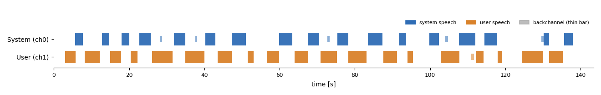
Transcript (with backchannels)
First meeting + long user silences v2 #04 · 2:02.8

Transcript (with backchannels)
First meeting + long user silences v2 #05 · 1:56.3

Transcript (with backchannels)
Attentive listening 傾聴（ユーザが話し、システムが聞き役）
config: configs/al_v1.yaml
Attentive listening #01 · 1:41.7

Transcript (with backchannels)
Attentive listening #02 · 1:52.2
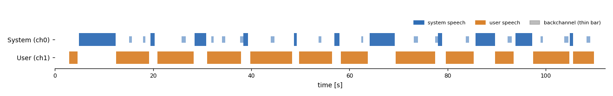
Transcript (with backchannels)
Attentive listening #03 · 1:24.1

Transcript (with backchannels)
Attentive listening #04 · 2:24.4
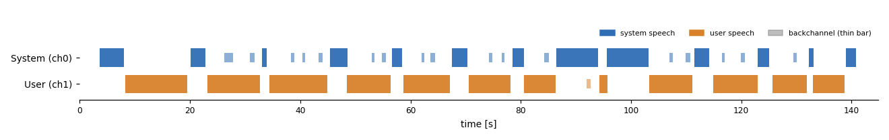
Transcript (with backchannels)
Attentive listening #05 · 1:55.5
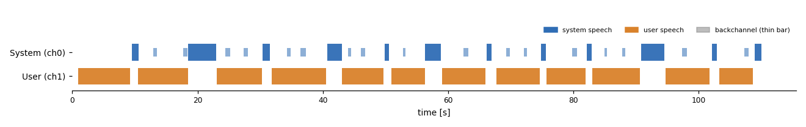
Transcript (with backchannels)
Overlapping speech 声が重なる場面（割り込み・同時発話など）
config: configs/rp_v1.yaml
Overlapping speech #01 · 2:25.3

Transcript (with backchannels)
Overlapping speech #02 · 2:22.1
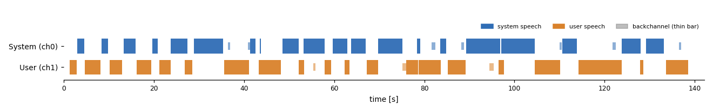
Transcript (with backchannels)
Overlapping speech #03 · 2:17.9

Transcript (with backchannels)
Overlapping speech #04 · 2:17.9
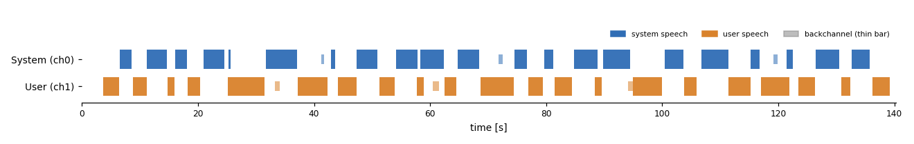
Transcript (with backchannels)
Overlapping speech #05 · 2:12.3
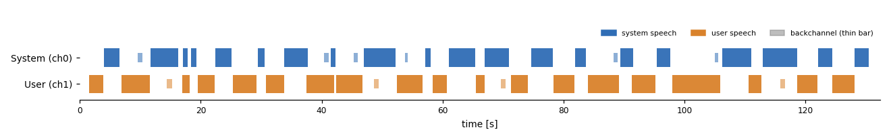
Transcript (with backchannels)
Question answering 質問応答（ユーザが質問し、システムが答える）
config: configs/qa_v1.yaml
Question answering #01 · 2:25.7
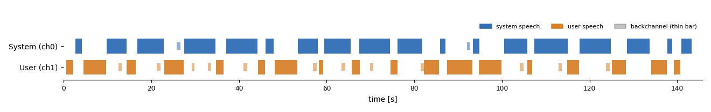
Transcript (with backchannels)
Question answering #02 · 2:21.9

Transcript (with backchannels)
Question answering #03 · 2:25.4

Transcript (with backchannels)
Question answering #04 · 2:16.7

Transcript (with backchannels)
Question answering #05 · 2:09.6

Transcript (with backchannels)
Generated by tools/build_demo_page.py. Generated dialogues follow the licenses and terms of the LLM, TTS model and voices used to make them.